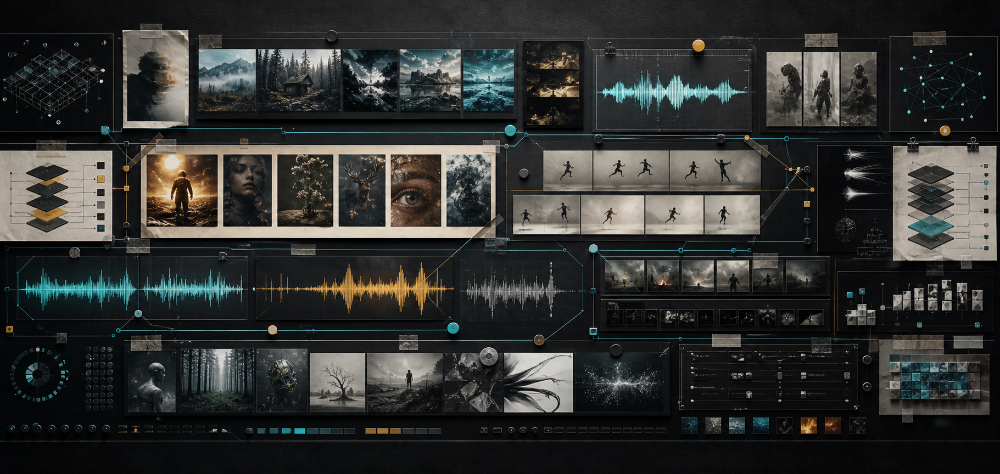
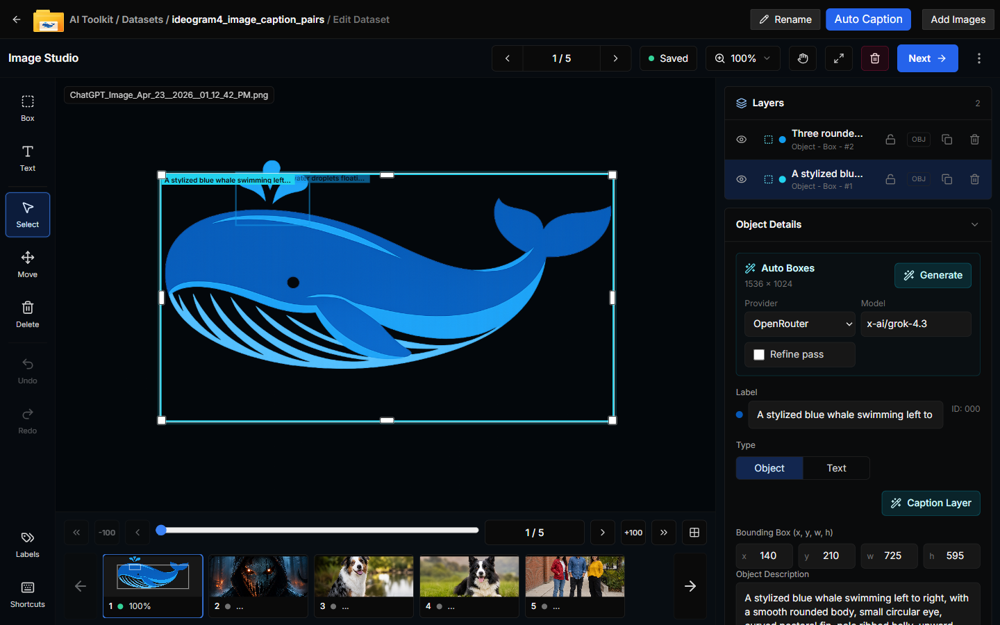
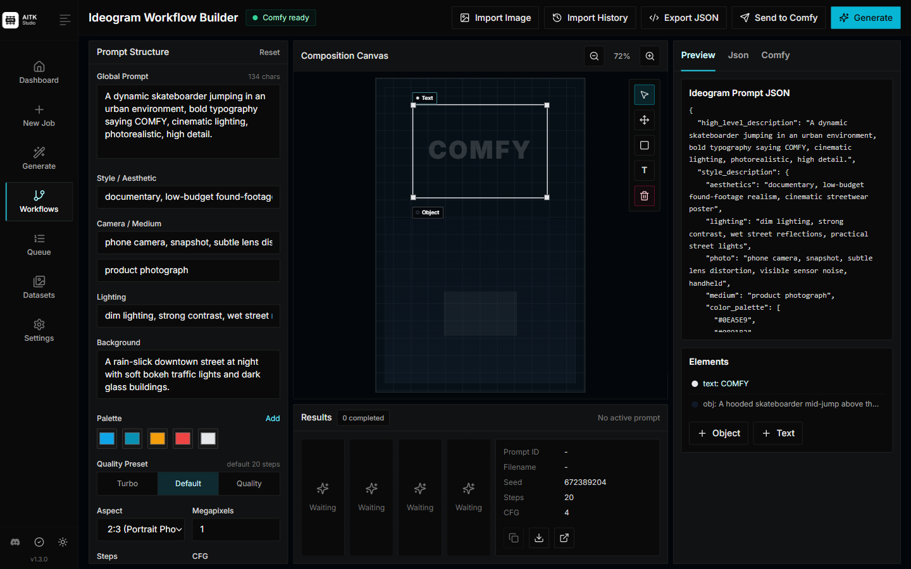
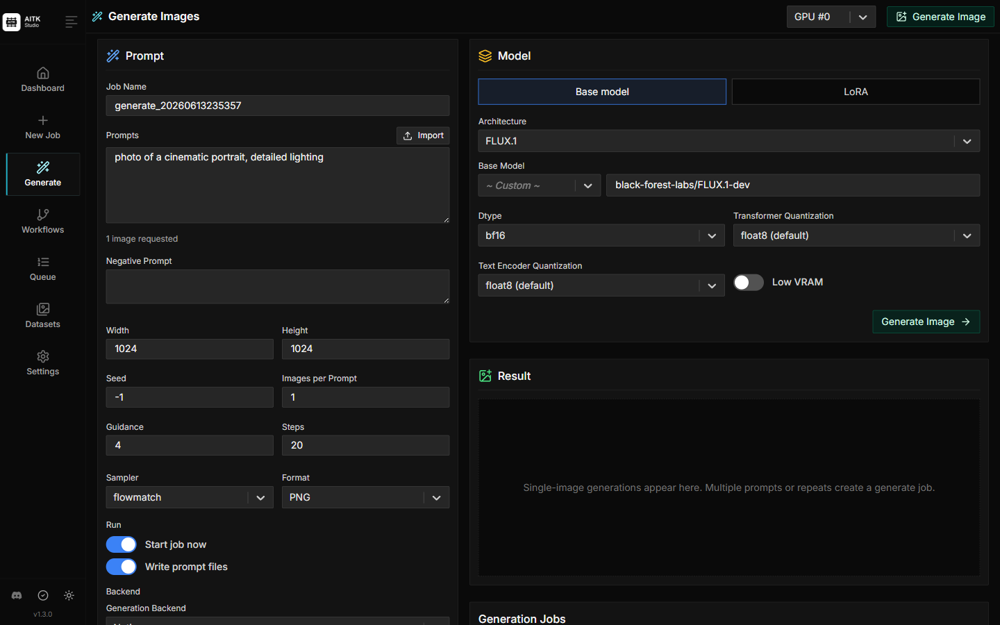
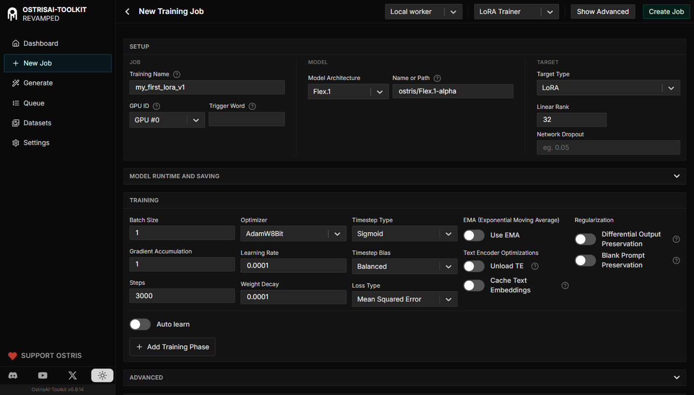

01
Style
Train a character, product, edit style, or visual habit without setting everything up from scratch each time.
Turn your own images, clips, or audio into LoRA and LoKr adapters you can reuse. Run the job on your machine, check the samples, and keep the result.
A folder of references can become a model you come back to.

Use the UI for the parts you do often. Open YAML when a run needs exact settings. Your dataset does not have to leave your machine.
Train a character, product, edit style, or visual habit without setting everything up from scratch each time.
Use Wan and LTX when the thing you want has timing, not just a good still frame.
Ace Step support gives audio experiments a place in the same toolkit.
Start with presets. Then change phases, optimizers, checkpoints, and encryption when the job gets serious.
Image, edit, video, and audio support live in one place. Choose a tab, pick a family, and get to work.
No fake product mockups here. These are the screens you use to set up jobs, inspect samples, and keep configuration close.

Edit captions, tune object boxes, and move through dataset images without leaving the studio.

Build Ideogram prompts with structured controls, canvas elements, palette choices, and live JSON preview.

Generate samples while you work, then compare what changed before you move on.

Set the model, adapter, dataset, optimizer, and run profile from one place.
The first run can be simple. The next one can be tuned. Either way, you end with an adapter you can use again.
Add images, video, or audio with the captions and notes that explain what matters.
Pick a model family, adapter type, preset, and phase plan that fit the result you want.
Watch checkpoints, samples, and loss while the worker does the slow part.
Export the adapter, generate with it, and use it in the rest of your setup.
You will need Python 3.10+, git, and an NVIDIA GPU. Blackwell / RTX 50-series users should use the Blackwell torch requirements file.